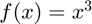
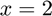
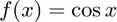
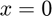

ihessian
Hessian matrix of a multivariate, scalar-valued function using the complex-step approximation.
Back to Numerical Differentiation Toolbox Contents.
Contents
Syntax
H = ihessian(f,x) H = ihessian(f,x,h)
Input/Output Parameters
| Symbol | Variable | Description | Format | |
| Input | f | multivariate, scalar-valued function ( |
1×1 function_handle |
|
| x | point at which to evaluate the Hessian matrix | n×1 double |
||
| h | (OPTIONAL) step size | 1×1 double |
||
| Output | H | Hessian matrix of |
n×n double |
Example #1
Evaluate the derivative of  at .
f = @(x) x^3; df = iderivative(f,2)
df =
12
Example #2
Evaluate the derivative  at .
f = @(x) cos(x); df = iderivative(f,0)
df =
0